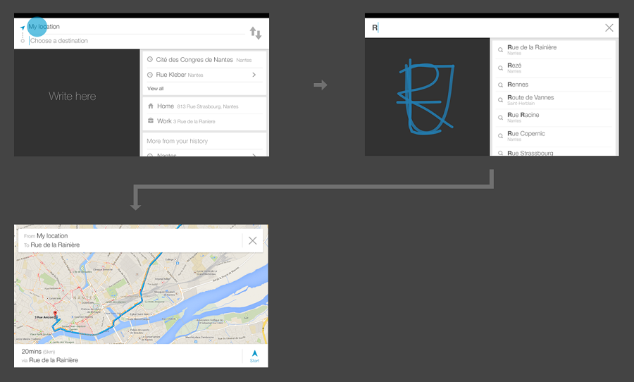
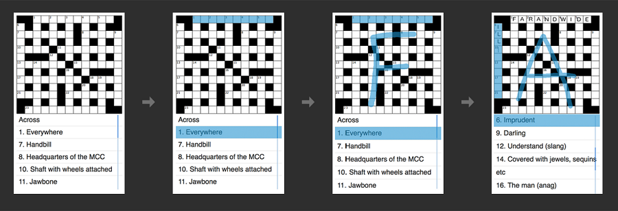
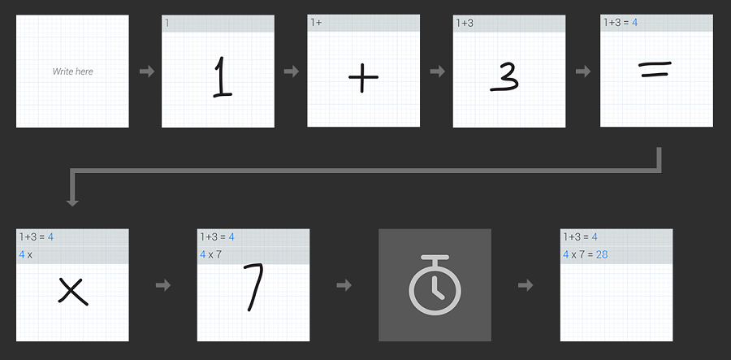

The below use cases are only examples of applications where SCW has been used, sometimes with additional features. Note that all available features for the SCW are listed in the API reference.
Here is an integration example of the Single Character Widget in a GPS application. In this scenario, the driver handwrites superimposed characters on a device, and does not necessarily need to pay attention to the writing area.

Here is an integration example of the Single Character Widget in a crossword application. In this scenario, the user handwrites isolated characters in the most natural way.

Here is an integration example of the Single Character Widget in a digital calculator. In this scenario, the user handwrites characters on top of each other, to display operations and final result.
